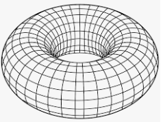
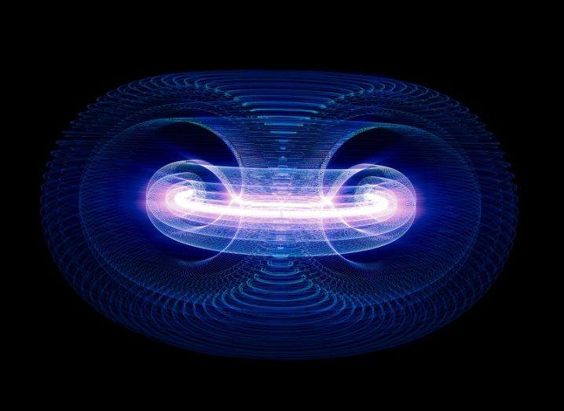
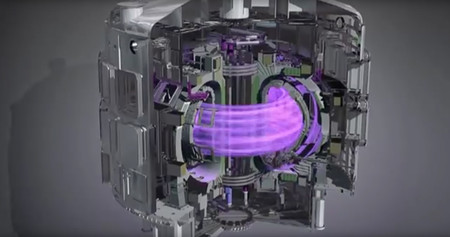

FUSION NUCLEAR
La fusión nuclear es una reacción nuclear en la que dos núcleos de átomos ligeros, en general el hidrógeno y sus isótopos (deuterio y tritio), se unen para formar otro núcleo más pesado, generalmente liberando partículas en el proceso. Estas reacciones pueden absorber o liberar energía, según si la masa de los núcleos es mayor o menor que la del hierro, respectivamente.
Un ejemplo de reacciones de fusión son las que tienen lugar en el sol, en las que se produce la fusión de núcleos de hidrógeno para formar helio, liberando en el proceso una gran cantidad de energía en forma de radiación electromagnética, que alcanza la superficie terrestre y que percibimos como luz y calor.
Para que tenga lugar una reacción de fusión, es necesario alcanzar altas cotas de energía que permitan que los núcleos se aproximen a distancias muy cortas en las que la fuerza de atracción nuclear supere las fuerzas de repulsión electrostática. Para ello, se deben cumplir los siguientes requisitos:
Para lograr la energía necesaria se pueden utilizar aceleradores de partículas o recurrir al calentamiento a temperaturas muy elevadas. Esta última solución se denomina fusión térmica y consiste en calentar los átomos hasta lograr una masa gaseosa denominada plasma, compuesta por electrones libres y átomos altamente ionizados.
Asimismo, es necesario garantizar el confinamiento y control del plasma a altas temperaturas en la cavidad de un reactor de fusión el tiempo necesario para que se produzca la reacción.
También es necesario lograr una densidad del plasma suficiente para que los núcleos estén cerca unos de otros y puedan dar lugar a las reacciones de fusión.

Sin embargo, los confinamientos convencionales, como las pa. de una vasija, no son factibles debido a las altas temperaturas. Por este motivo, se encuentran en desarrollo dos métodos de confinamiento:
Fusión por Confinamiento Inercial (FCI): Consiste en crear un medio tan denso que las partículas no tengan casi ninguna posibilidad de escapar sin chocar entre sí. Para ello se impacta una pequeña esfera compuesta por deuterio y tritio por un haz de láser provocando su implosión. Así, se hace cientos de veces más densa que en su estado sólido normal permitiendo que se produzca la reacción de fusión. Actualmente hay reactores de investigación con el objetivo de producir energía a través de este proceso.
Fusión por Confinamiento Magnético (FCM): Las partículas eléctricamente cargadas del plasma son atrapadas en un espacio reducido por la acción de un campo magnético. El dispositivo más desarrollado tiene forma toroidal y se denomina Tokamak.

El tritio es un isótoporadiactivo del hidrógeno cuyo núcleo consiste en un protón y dos neutrones. La aplicación más importante del tritio es su utilización como combustible nuclear para la obtención de energía mediante la fusión nuclear.

Comenta Aqui